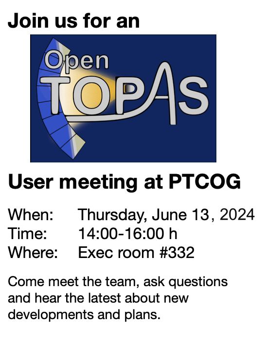

OpenTOPAS User meeting at PTCOG2024
Join the collaboration at PTCOG2024 for the latest user meeting and roadmap discussions.
Stay informed about OpenTOPAS milestones, community updates, and upcoming events.
Join the collaboration at PTCOG2024 for the latest user meeting and roadmap discussions.
The following is an address, by the NIH-funded TOPAS team, to the recent addition to the topasmc website, made on May 6, 2024.
While funded by NIH, the TOPAS project was first led by Dr. Paganetti (MGH) and then by Dr. Faddegon (UCSF) as Principal Investigators. Both involved Mr. Perl from SLAC as a subcontractor. As Mr. Perl stated in his post from May 6 on the website mentioned above, he acted as an architect of the TOPAS development for many years. We acknowledge Mr. Perl's contribution as a code architect.
The project was an institutional collaboration between MGH, SLAC, and UCSF. Code development was done jointly between the site PIs at MGH (Dr. Paganetti), UCSF (Dr. Faddegon), and SLAC (Mr. Perl) with the help of many talented researchers, postdocs, and students at MGH and UCSF who contributed to the code validation and developed most of the features of TOPAS.
As the previous NCI funding period ended, we submitted a renewal application to the NCI this year. This was done by the TOPAS team, not including Mr. Perl, who had decided to leave the collaboration. We, as the remaining TOPAS team, have now moved to OpenTOPAS evolving from the previous TOPAS.
We leave it up to the current users whether they want to use the previous TOPAS code led by Mr. Perl or follow the TOPAS collaboration to OpenTOPAS.
- The TOPAS Collaboration
The first version of OpenTOPAS has been released. Enjoy it!